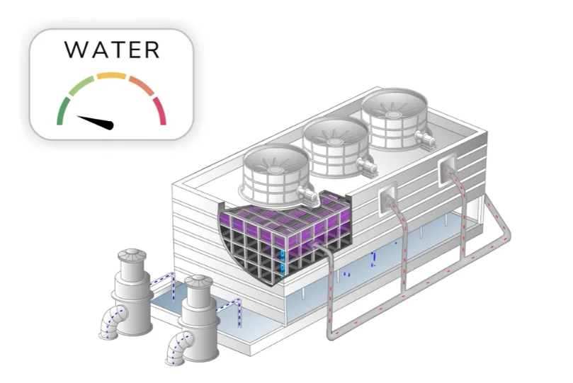

Electrostatic fog recovery — Venezuela
The water your cooling towers lose as fog. Recovered.
Aqua builds modular electrostatic recovery systems for refinery cooling towers: a corona emitter charges the microdroplets escaping in the plume, and a controlled electric field pulls them back into the loop. Built on technology validated at MIT — engineered for Venezuela's refining system.
01 — The problem
Refineries lose water they can never get back — as fog.
Venezuela hosts some of the largest refineries on Earth. The Paraguaná Refining Complex — Amuay and Cardón, in Falcón — has installed capacity above 940,000 barrels a day4; El Palito and Puerto La Cruz add more. All of them depend on cooling towers circulating massive volumes of fresh water — and a share of it leaves irrecoverably through the fan stacks, as an evaporative plume that recondenses into micron-scale droplets in the air above. No active recovery technology is deployed in the Venezuelan market today.
Lost to the plume
3–5%
of circulating cooling water leaves as evaporative loss — roughly 1% for every 10 °F of cooling range. It rises through the fan stacks and recondenses as a plume of micron-scale droplets. Passive fog mesh recovers 1–2% of droplets that size: they simply follow the air around every wire.
Water stress
Falcón · Anzoátegui
The states hosting CRP and Puerto La Cruz have documented water deficits5. Refineries and communities draw on the same aqueducts, with droughts more frequent — social tension that becomes operational risk.
Avoidable cost
$150–400K/yr
What recovering 15% of the fog lost from a single tower can represent at complex scale — direct operating relief for installations running under severe financial pressure, on deteriorated infrastructure that makes every loss worse.
AQUA ESTIMATE
SCALE For a sense of the stream being tapped: a US Department of Energy–funded full-scale prototype on the cooling tower of a 620 MW power plant in Wisconsin — not an Aqua installation — recovered 20–30% of the water that plant was losing through its towers, a rate worth up to 150 million gallons a year at 600 MW scale.3
02 — The technology
Watch the physics work.
A 10-micron fog droplet has almost no inertia — it rides the air around anything in its path, which is why denser mesh never helps. Scroll from the loss through aerodynamics → ionization → acceleration → collection to the return: the whole process runs live, computed in your browser from the physics published at MIT.1
Scroll — the experiment runs as you read ↓
Schematic — not to scale
Stage 01 / 06 — The invisible loss
Every cooling tower loses water.
Fans draw air up through the fill as warm water rains down inside. Most of it cools and returns — but 3–5% evaporates and leaves through the fan stacks, recondensing above the tower as a plume of micron-scale droplets. At that size, water moves like air: it can't be piped or filtered back.
3–5% of circulating water · leaves as plume
Stage 02 / 06 — Aerodynamics
Fog outruns the mesh.
Zoom to a single collector wire, magnified ~1,000×. A fog droplet has too little inertia to leave its streamline, and the streamlines bend around the wire. Only the razor-thin window A₀ ever lands — which is why denser passive mesh never helps.
Passive capture window A₀ · 1–2% recovery
Stage 03 / 06 — Ionization
Charge the fog.
An emitter is raised to ~10 kV. A corona discharge — drawing just ~0.01 mA — floods the air with ions that collide with the passing droplets and stick. Within milliseconds every droplet in the plume carries charge.
~10 kV · ~0.01 mA · ~40 W/m² of mesh
Stage 04 / 06 — Acceleration
Pull it across the flow.
A charged droplet feels a force the moving air cannot cancel. The trajectories peel off the streamlines and bend onto the grounded wire — the effective capture window widens from A₀ to A, far larger than the wire itself.
Capture window A₀ → A · electrostatic force
Stage 05 / 06 — Collection
Captured and coalesced.
Droplets land on the wire and merge into a running film. The same plume that slips straight through a bare mesh is now collected — from the very same footprint, with no change to the airflow the tower depends on.
20–30% of tower water loss recovered
Stage 06 / 06 — Close the loop
Back to the basin.
Scaled back out: circular collector arrays sit over each fan, capturing the plume before it clears the stack. Recovered water settles straight into the tower's full basin below: 4,000–10,000 L a day, at ~0.2 kWh/m³.
4,000–10,000 L/day · ~0.2 kWh/m³
Recovered — per installation
4,000–10,000L / day
Energy per m³
Up to 25× less energy than replacing it
03 — The system
The Aqua recovery module.
A corona ion emitter and grounded collector mesh, packaged as a modular panel that mounts over existing cooling-tower cells. Retrofittable on infrastructure already in the field — no tower redesign, minimal installation downtime.

- Recovery of tower water loss
- 20–30%
- Energy / m³ recovered
- ~0.2 kWh
- Electrode load
- ~40 W/m² · 0.01 mA
- Recovery / installation
- 4,000–10,000 L/day
- Integration
- Retrofit — no redesign
- Payback
- 2–4 years
STATUS Energy and electrode figures are laboratory results from the MIT research underlying Aqua's system1; the 20–30% recovery rate is from a DOE-funded full-scale prototype on a 620 MW plant3. Volume per installation and payback are Aqua engineering estimates for CRP-scale towers, pending validation on our lab prototype. Payback applies to the capital-purchase route — under Model B below there is no upfront cost to pay back. Request the technical brief for current test data.
Request the technical briefModel A — fixed O&M contract
USD $20–50K per tower, annually
Aqua installs the system and operates it under a fixed annual contract: maintenance, remote monitoring, calibration and technical support. Predictable cost, long-term operating partner.
Model B — performance contract
$0 upfront · 20–25% of certified savings
Aqua installs at no cost and is paid a share of the water and energy savings measured and certified each month. Validate results first — then migrate to a fixed contract if you prefer.
04 — Why Aqua
Against passive recovery.
| Criterion | Passive fog-collection mesh | Aqua system |
|---|---|---|
| Capture | 1–2% of plume microdroplets in real conditions, regardless of mesh area2 | 20–30% of tower water loss recovered — charged droplets are pulled onto the collector |
| Root cause | Unaddressed — droplets ride the streamlines around every wire | Space-charge injection forces droplets across the streamlines |
| Energy | Replacing lost water via RO desalination costs 3–5 kWh/m³ | ~0.2 kWh/m³ recovered — up to 25× less energy |
| Integration | Efficiency fixed at design time; upgrades mean tower rework | Modular panels retrofit onto existing cells, no redesign |
| Commercial | Capital purchase; recovered value goes unmeasured | Zero-capex performance contract — billed from certified savings |
05 — Applications
Built for Venezuela's refining complexes first.
A-01
Refinery cooling towers
The primary target. CRP alone — Amuay and Cardón — concentrates more than 40 operating cooling towers; El Palito and Puerto La Cruz extend the map. Massive circulating volumes in water-stressed states.
A-02
Petrochemical complexes
Pequiven plants run the same cooling-tower infrastructure with the same evaporative losses — the natural second market once refinery pilots are proven.
A-03
Thermoelectric generation
Steam-cycle power plants lose water through their towers the same way — recovery feeds directly into the plant water balance.
First deployments target PDVSA and mixed-enterprise refineries; petrochemical and power applications follow in the medium term.
06 — About
Engineered in Venezuela.
Aqua was founded by Samuel Hernández to bring frontier water-recovery technology to the industry Venezuela is built on. The science is published and validated — electrostatic fog collection by space-charge injection, from MIT1 — and we are building the first reduced-scale prototype that reproduces the plume of a real cooling tower.
Our mission is to make the water Venezuelan industry already circulates go further — for the refineries, and for the communities sharing the same basins. A single CRP-scale installation can return 4,000–10,000 liters a day to the local water balance.
Status — early prototype · lab validation

Samuel Hernández
Founder & CEO
Impact
Aligned with SDG 6 (clean water), SDG 9 (industry & innovation) and SDG 13 (climate action): recovered water eases pressure on the aqueducts that supply refineries and communities from the same watershed, and cuts the energy embedded in extracting, treating and pumping replacement water.
07 — Contact
Request a consultation.
Tell us about your towers — cell count, circulating flow, water constraints — and we'll come back with a recovery estimate. Pilots run under performance contracts: no upfront investment, Aqua is paid from certified savings. For investors: same form, mention it in the message.
Request received
Thank you — we'll be in touch.
Expect a first response within two business days. If your inquiry is time-sensitive, reach us directly at sam@aqua-ve.com.